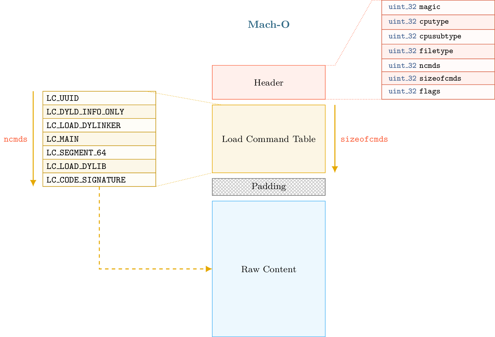
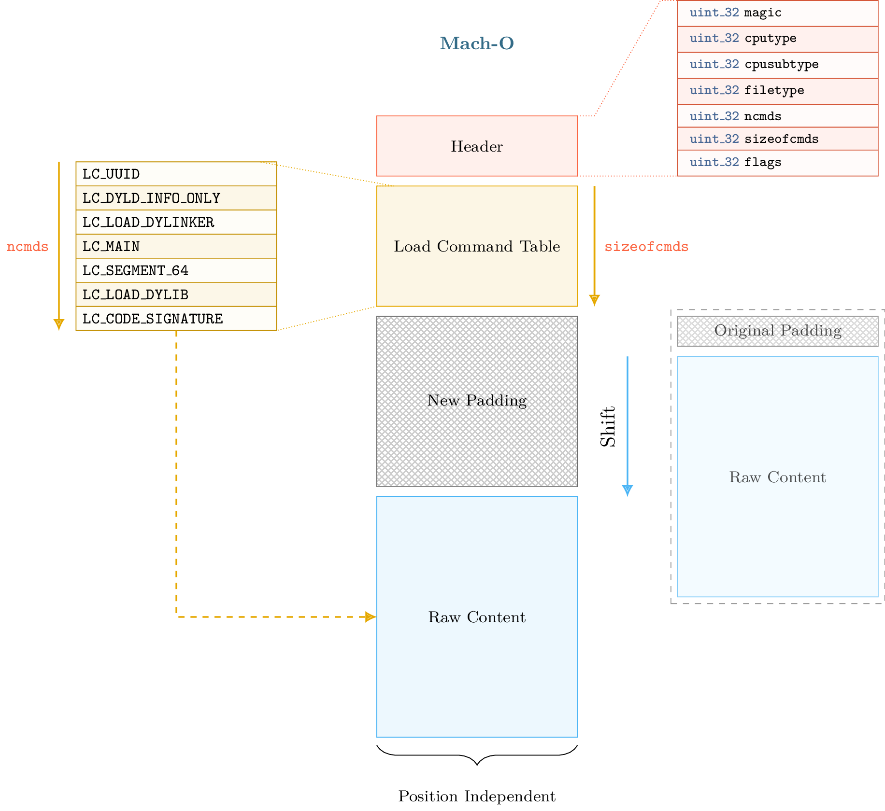
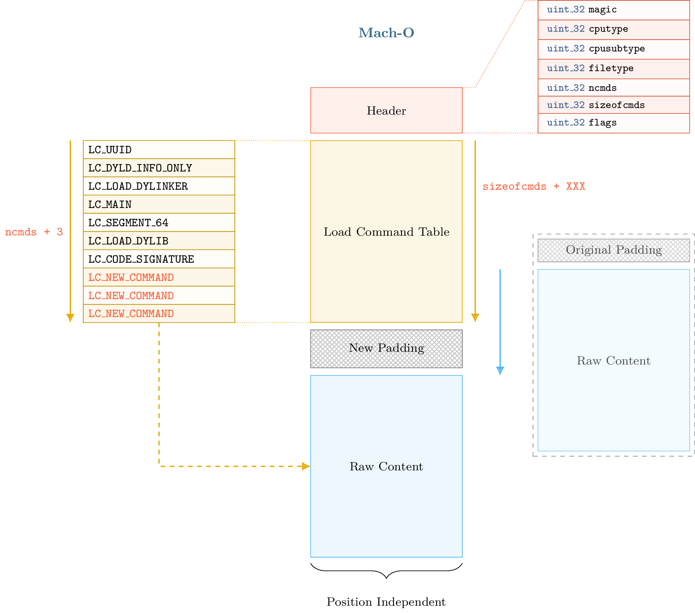
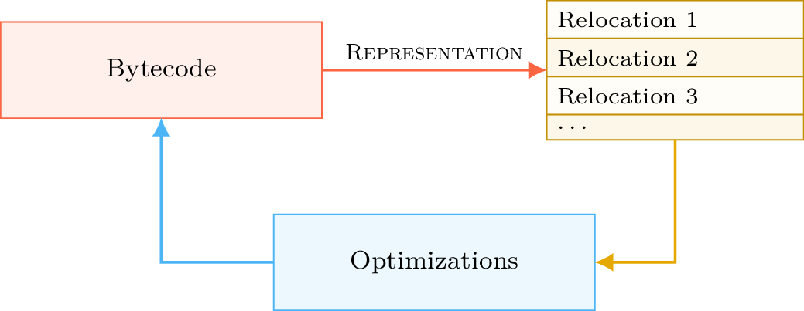
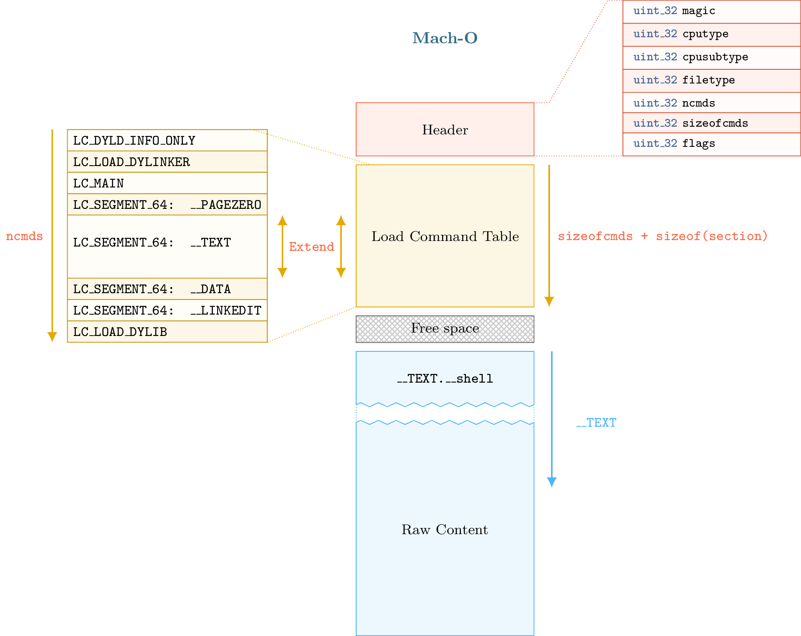

11 - Mach-O Modification¶
This tutorial deals with Mach-O format modification and introduces some internal aspects of the format.
Files and scripts used in this tutorial are available on the tutorials repository
By Romain Thomas - @rh0main
Introduction¶
A basic Mach-O binary (i.e. not FAT) can be represented in fours parts that are described in this diagram:

The first part begins with a header that can be accessed through the lief.MachO.Binary.header attribute. In the second part, we have the load commands table which can be iterated using lief.MachO.Binary.load_commands
then, we can optionally have padding or free space. Finally, we have the raw data (assembly code, rebase bytecode, signature, …)
Load commands like SegmentCommand or DyldInfo can be associated with raw data that are located after the load command table and the padding section.
The padding section is used by OSX to sign the binary after the compilation by adding a custom command. The codesign utility extends the raw data area with the signature and adds a LC_CODE_SIGNATURE or a LC_DYLIB_CODE_SIGN_DRS command in the padding area.
Since load commands are the base unit of the Mach-O format – segments, shared libraries, entry point, etc are somehow commands – being able to add arbitrary commands in a binary enables interesting like code injection, anti-analysis, …
Different techniques exist to add new command in a Mach-O binary:
One can replace an existing load command that is not mandatory for the execution like
UUIDCommandorCodeSignature.One can use the padding area add to the command header.
The main limitation of these techniques is that the size and the number of commands that can be added are tied to the padding section size or to the size of the command replaced.
If the padding size is tiny, we can’t add a LOAD_DYLIB command with a very long library path. Moreover codesign may complain that there are not enough spaces to add the LC_CODE_SIGNATURE since we are using the space that was reserved for it.
Next parts are about format modifications and how we managed to address this limitation
When PIE makes thing easier¶
OSX and iOS executables are by default compiled with flags that make them position independent. Instructions generated by the compiler will use relative addressing associated with rebase information.
To simplify (not accurate), PIE binaries enable to map the raw data section at a random base address. The idea that is implemented in LIEF is that raw data section can be mapped at a random base address so it can also be shifted within the format.

Such transformation also requires to keep a consistent state of the format metadata. Especially, when we shift the raw data we need to update relocations, segment offsets, virtual address, etc. Once the raw data shifted and the metadata updated, we have an arbitrary space between the load command table and the raw data section. Thus we can extend the load command table as shown in figure below:

Warning
The size of the shift must be aligned on a page size to avoid issues with section and segment alignments.
Keeping the format consistency after the shift transformation is not easy. The next part presents some parts of the Mach-O format that need to be updated in order to keep the consistency.
When Mach-O makes thing harder¶
After the shift operation, we need to update several load commands of the Mach-O format:
lief.MachO.SymbolCommand.symbol_offset/lief.MachO.SymbolCommand.strings_offset
lief.MachO.DataInCode.data_offset,lief.MachO.CodeSignature.data_offset,lief.MachO.SegmentSplitInfo.data_offset
lief.MachO.FunctionStarts.data_offset/lief.MachO.FunctionStarts.functions
lief.MachO.Section.offset/lief.MachO.Section.virtual_address
lief.MachO.SegmentCommand.offset/lief.MachO.SegmentCommand.virtual_address…
We also need to update:
Relocations
Binding information
Export information
Whereas ELF and PE formats use some kinds of struct for internal storage of relocations and exports, Mach-O format uses a bytecode to rebase the binary. Export information are stored in a trie data structure. The use of trie and bytecode reduces the binary size but it makes the update more difficult as we need to interpret and regenerate the bytecode.
Rebase bytecode¶
As mentioned in the previous part, recent Mach-O loader uses a bytecode to relocate (or rebase) the binary.
Offset and size of the bytecode are given in lief.MachO.DyldInfo.rebase attribute. Basically, bytecode is compound of REBASE_OPCODES that define addresses to relocate.
Warning
One can notice that Section object has a relocation_offset attribute. Actually, it seems to be only
used for Mach-O object files (lief.MachO.FILE_TYPES.OBJECT) or with an executable that uses an old version of the Mach-O loader.
This offset points to a list of relocation structures (not bytecode) whose number is defined by numberof_relocations.
To know which addresses need to be relocated, we have to interpret the bytecode.
The lief.MachO.DyldInfo.show_rebases_opcodes attribute returns the bytecode as pseudo code:
import lief
app = lief.parse("MachO64_x86-64_binary_id.bin")
print(app.dyld_info.show_rebases_opcodes)
[SET_TYPE_IMM] Type: POINTER
[SET_SEGMENT_AND_OFFSET_ULEB] Segment Index := 2 (__DATA) Segment Offset := 0x20
[DO_REBASE_ULEB_TIMES]
for i in range(26):
rebase(POINTER, __DATA, 0x20)
Segment Offset += 0x8 (0x28)
rebase(POINTER, __DATA, 0x28)
Segment Offset += 0x8 (0x30)
rebase(POINTER, __DATA, 0x30)
Segment Offset += 0x8 (0x38)
rebase(POINTER, __DATA, 0x38)
Segment Offset += 0x8 (0x40)
rebase(POINTER, __DATA, 0x40)
Segment Offset += 0x8 (0x48)
...
[DONE]
From the above output, we can see that the loader will rebase pointer in the __DATA segment at offset 0x20, 0x28, 0x38, ....
For those who only care about which exact addresses are relocated, this output is not very user-friendly. LIEF also provides a representation of this bytecode by creating lief.MachO.Relocation object.
They are the result of the interpretation of the bytecode.
The lief.MachO.Binary.relocations attribute returns an iterator over lief.MachO.Relocation objects that model a relocation in a similar object as lief.ELF.Relocation and lief.PE.Relocation.
for relocation in app.relocations:
print(relocation)
100002020 POINTER 64 DYLDINFO __DATA.__la_symbol_ptr _err
100002028 POINTER 64 DYLDINFO __DATA.__la_symbol_ptr _errx
100002030 POINTER 64 DYLDINFO __DATA.__la_symbol_ptr _exit
100002038 POINTER 64 DYLDINFO __DATA.__la_symbol_ptr _fprintf
100002040 POINTER 64 DYLDINFO __DATA.__la_symbol_ptr _free
100002048 POINTER 64 DYLDINFO __DATA.__la_symbol_ptr _fwrite
...
Using this representation, we can update relocations by adding the shift size to the lief.MachO.Relocation.address attribute.
When the Mach-O builder reconstructs the final binary, it regenerates and optimize the rebase bytecode according to the current state of the relocations. The process can be summed up with the following diagram:

Binding bytecode¶
The Mach-O loader also uses a bytecode to bind imported functions or imported symbols. Actually, this bytecode is used in three different binding methods:
Normal binding
Weak binding – Used when the same symbol is defined multiple times
Lazy binding – Bound only when there is an access to the symbol
The bytecode can be pretty printed with the show_bind_opcodes, show_weak_bind_opcodes and show_lazy_bind_opcodes:
print(app.dyld_info.show_bind_opcodes)
[SET_DYLIB_ORDINAL_IMM]
Library Ordinal := 1
[SET_SYMBOL_TRAILING_FLAGS_IMM]
Symbol name := ___stderrp
Is Weak ? false
[SET_TYPE_IMM]
Type := POINTER
[SET_SEGMENT_AND_OFFSET_ULEB]
Segment := __DATA
Segment Offset := 0x10
[DO_BIND]
bind(POINTER, __DATA, 0x10, ___stderrp, library_ordinal=/usr/lib/libSystem.B.dylib, addend=0, is_weak_import=false)
Segment Offset += 0x8 (0x18)
The representation and the update process is the same as the one described in the section about Rebase bytecode
Export Trie¶
Regarding exported functions and exported symbols, Mach-O format uses a trie structure to store export information. Trie offset and size are given in the export_trie attribute.
Once parsed, trie entries are represented through the ExportInfo object and can be retrieved with the export_info attribute.
app = lief.parse("FAT_MachO_x86_x86-64_library_libdyld.dylib")
print(app.dyld_info.show_export_trie)
...
_@off.0x17
_N@off.0x21
_NS@off.0x50
_NSI@off.0x5d
_NSInstallLinkEditErrorHandlers@off.0x11d
_NSInstallLinkEditErrorHandlers{addr: 0x126b, flags: 0}
...
for s in app.symbols:
if s.has_export_info:
print(s.export_info)
Node Offset: 128
Flags: 0
Address: 126b
Symbol: _NSInstallLinkEditErrorHandlers
Node Offset: 5f6
Flags: 0
Address: 2168
Symbol: _NSIsSymbolDefinedInObjectFileImage
Node Offset: 1a0
Flags: 0
Address: 1391
Symbol: _NSIsSymbolNameDefined
...
After the shift operation, export information are patched by updating the address attribute, then a new export trie is generated from the previous updates.
Removing signature¶
Removing the LC_CODE_SIGNATURE command is a basic modification that is pretty useful when modifying Mach-O file. Since the signature
checks the integrity of the binary, we usually need to remove this command after modification on the file. We can still re-sign the binary once all modifications finished.
LIEF provides the lief.MachO.Binary.remove_signature() function to remove this command:
ssh = lief.parse("/usr/bin/ssh")
ssh.remove_signature()
ssh.write("ssh.nosigned")
Adding Section/Segment¶
As we can allocate arbitrary space between the load command table and the raw data, we can also extend an existing LoadCommand.
Especially, Mach-O segments are commands that are associated with the LIEF object lief.MachO.SegmentCommand.
To add a new section in the __TEXT segment, we must extend the load command associated with this segment so that we can add a new section structure. We must also reserve space for the content of the section.
As the content of the __TEXT segment begin at offset 0 and finish somewhere in the raw data, the right place to insert the new content is between the end of the load command table and the beginning of the raw data:

The process described above is implemented through the lief.MachO.Binary.add_section() method.
Here is an example in which we will inject assembly code that executes /bin/sh:
app = lief.parse("MachO64_x86-64_binary_id.bin")
raw_shell = [...] # Assembly code
section = lief.MachO.Section("__shell", raw_shell)
section.alignment = 2
section += lief.MachO.SECTION_FLAGS.SOME_INSTRUCTIONS
section += lief.MachO.SECTION_FLAGS.PURE_INSTRUCTIONS
section = app.add_section(section)
print(section)
Then we can change the entry point by setting the lief.MachO.MainCommand.entrypoint attribute:
__TEXT = app.get_segment("__TEXT")
app.main_command.entrypoint = section.virtual_address - __TEXT.virtual_address
Finally, we remove the signature and reconstruct the binary:
app.remove_signature()
app.write("./id.modified")
The execution of id.modified should give a similar output:
Mac-mini:tmp romain$ ./id.modified
tmp @ [romain] $
References
API